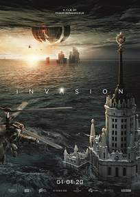

Ekspresi wajah merupakan salah satu cara penting dalam menyampaikan pesan sosial dalam kehidupan manusia, namun juga terjadi pada mamalia lain dan beberapa spesies hewan lainnya. Manusia dapat mengalami ekspresi wajah tertentu secara sengaja, tapi umumnya ekspresi wajah dialami secara tidak sengaja akibat perasaan atau emosi manusia tersebut. Biasanya amat sulit untuk menyembunyikan perasaan atau emosi tertentu dari wajah, walaupun banyak orang yang merasa amat ingin melakukannya.
List Film
- The Witches (2020)
Tanggal rilis : 22 Oktober 2020 (Amerika)
Kisah berawal dengan duka yang dialami seorang anak laki-laki (Jahzir Kadeem) yang baru saja kehilangan orangtuanya. Sang nenek (Octavia Spencer) pun membawanya menuju kota kecil. Demopolis di Alabama, untuk memulai kehidupan baru. Meski awalnya kesulitan menyesuaikan diri, bocah delapan tahun itu perlahan mampu melupakan kesedihannya. Suatu hari, keduanya memutuskan untuk berlibur di hotel megah yang berada di tepian laut. Di waktu yang bersamaan, rombongan wanita yang dipimpin oleh Grand High Witch (Anne Hathway) juga tengah memasuki lobi. Grand High Witch menyewa sebuah ruangan di hotel tersebut untuk acara konferensinya. Tentu saja, sang manajer hotel (Stanley Tucci) beranggapan jika tamunya merupakan anggota perkumpulan biasa. Padahal, Grand High Witch dan para pengikutnya sedang merencanakan aksi untuk mengubah anak-anak menjadi tikus! Apakah anak-anak di Alabama akan selamat dari cengkraman para penyihir?. - Sedih: 15%
- Senang: 10%
- Terkejut: 15%
- Takut: 20%
- Menangis: 15%
- Tegang: 0%
- Tertawa: 0%
- Bingung: 5%
- Melamun: 10%
- Marah: 10%
- Invasion (2020)
Tanggal rilis : 1 Januari 2020
Film ini disutradarai oleh Fedor Bondarchuk. Film ini bercerita tentang adalnya kapal alien yang jatuh ke bumi yang dimana pada saat kapal itu jatuh bumi mengalami perubahan dari segi lingkungan dan alam. - Sedih: 0%
- Senang: 4,76%
- Terkejut: 4,76%
- Takut: 14,28%
- Menangis: 9,52%
- Tegang: 0%
- Tertawa: 14,28%
- Bingung: 9,52%
- Melamun: 9,52%
- Marah: 42,85%
 Bird Box (2018)
Bird Box (2018)
Tanggal rilis : 14 Desember 2018 (Amerika)
Menceritakan tentang teror misterius kepada penduduk dunia yang mengakibatkan bunuh diri masal. Setelah menyerang Siberia dan menyebar ke berbagai belahan Eropa, kejadian misterius itu akhirnya menyerang warga Amerika. Malorie Hayes (Sandra Bullock), seorang seniman yang tengah mengandung sedang memeriksakan diri ke dokter bersama kakak perempuannya Jessica (Sarah Paulson). Dalam perjalanan pulang, keduanya melihat terjadi kekacauan di luar hingga banyak orang melakukan bunuh diri. Di saat yang sama, Jessica kemudian terlihat aneh hingga akhirnya bunuh diri di depan mata Malorie.- Sedih: 17,85%
- Senang: 17,85%
- Terkejut: 7,14%
- Takut: 14,28%
- Menangis: 7,14%
- Tegang: 10,71%
- Tertawa: 0%
- Bingung: 14,28%
- Melamun: 0%
- Marah: 10,71%
 High and Low The Movie (2016)
High and Low The Movie (2016)
Tanggal rilis : 16 Juli 2016
Film high & low the movie bercerita tentang kondisi sebuah kota legendaris yang telah hancur pasca pertempuran. Kota itu bernama mugen. Film ini mengambarkan kisah dari lima organisasi yang dikenal sebagai sanno association, putih rascals, rude boys, onija sma dan daruma hooligans.Kelima geng tersebut mengambil bagian dalam pertempuran sengit dan akhirnya mereka kembali mendominasi area tersebut. Namun sesuatu yang mengejutkan terjadi ketika sekelompok misterius yang disebut “laskar perkasa” tiba-tiba muncul.- Sedih: 4%
- Senang: 16%
- Terkejut: 8%
- Takut: 0%
- Menangis: 24%
- Tegang: 12%
- Tertawa: 16%
- Bingung: 12%
- Melamun: 4%
- Marah: 4%
 The Stolen Princess (2018)
The Stolen Princess (2018)
Tanggal rilis : 7 Maret 2018
Sebuah kisah dari zaman para ksatria yang gagah berani, putri-putri cantik, dan penyihir jahat. Ruslan, seorang seniman yang bercita-cita menjadi ksatria, bertemu dan jatuh cinta pada Mila yang cantik, tanpa menyadari bahwa dia adalah putri Raja..- Sedih: 4%
- Senang: 30%
- Terkejut: 8%
- Takut: 4%
- Menangis: 0%
- Tegang: 8%
- Tertawa: 13%
- Bingung: 13%
- Melamun: 0%
- Marah: 17%